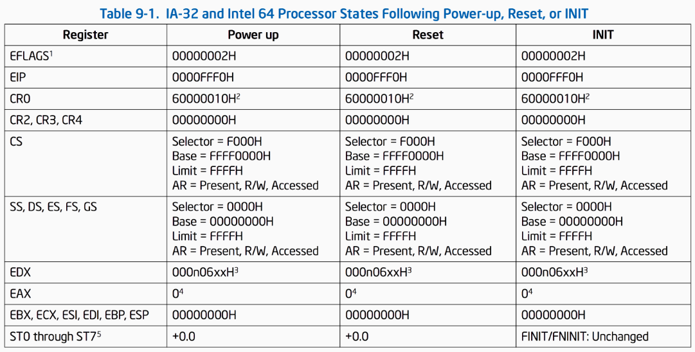
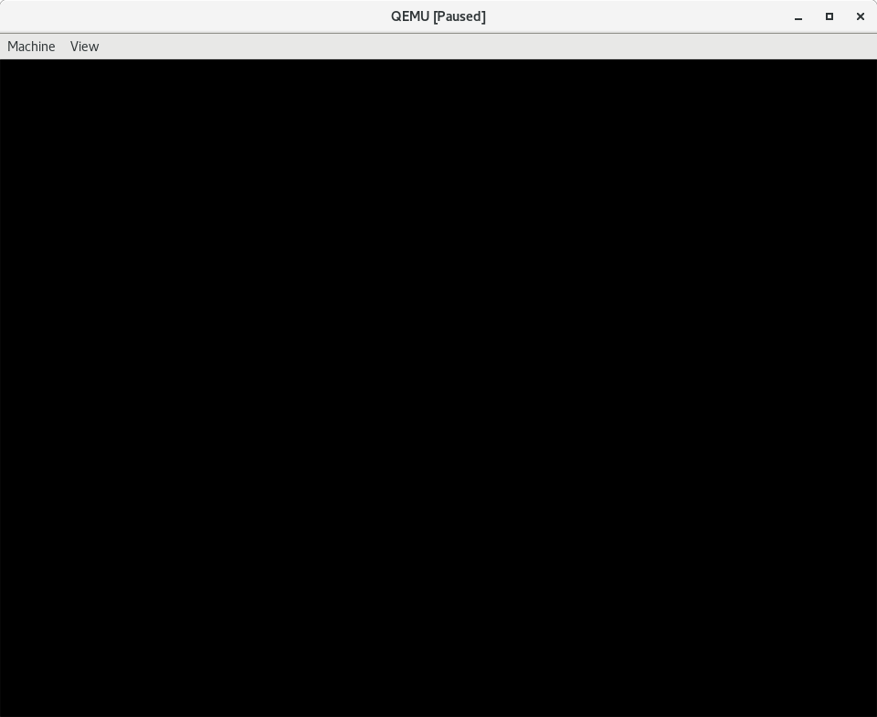
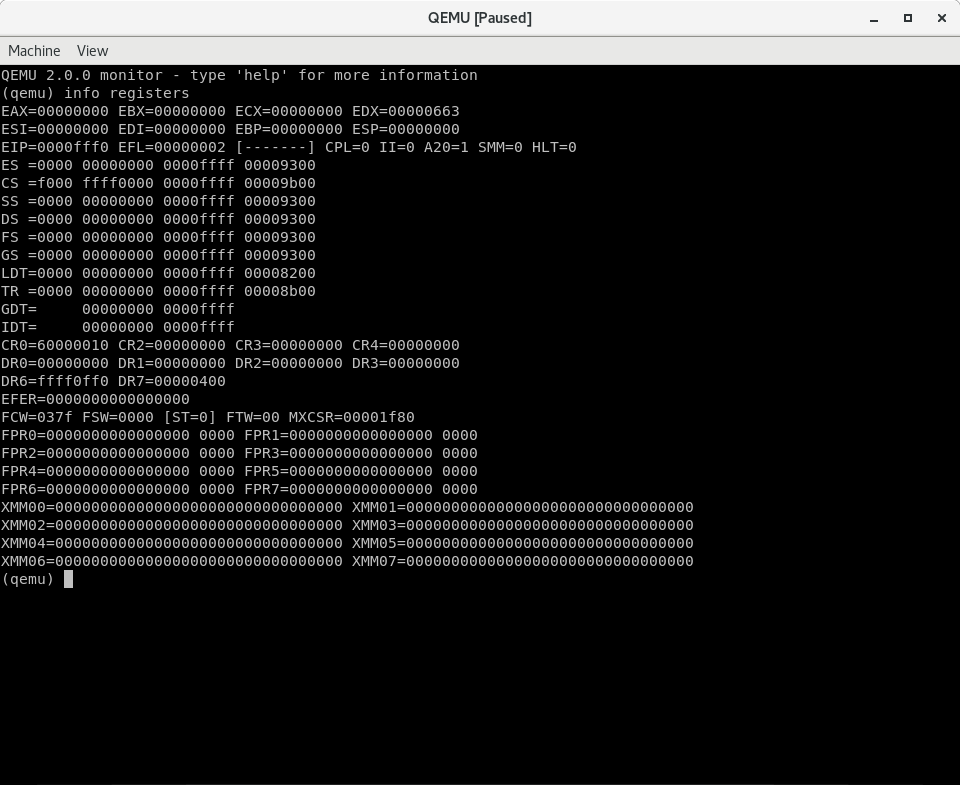
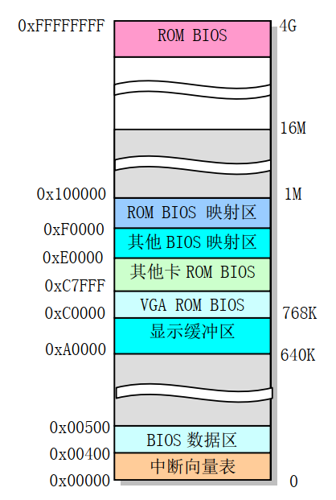
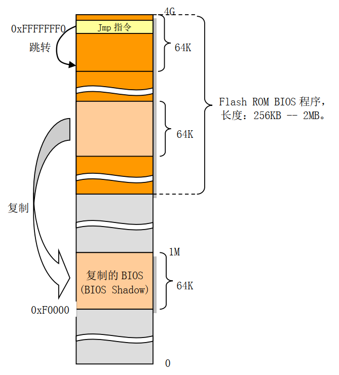
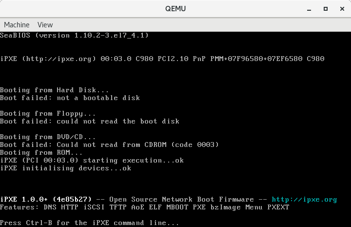
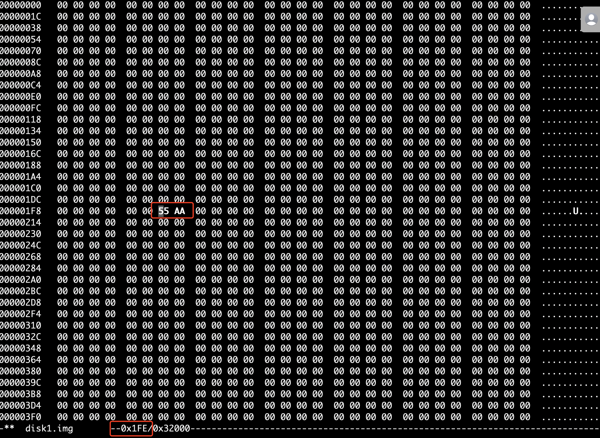
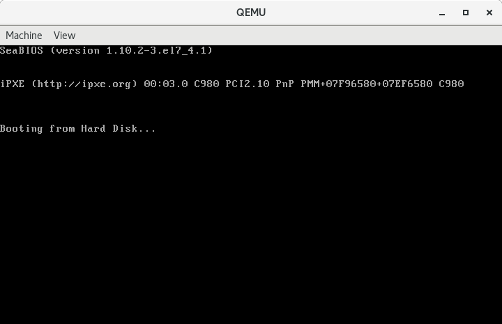

001-计算机是如何启动的
Contents
通常计算机的启动方式有两种，传统的BIOS-MBR启动模式和新的UEFI-GPT启动模式，本文将介绍传统的BIOS-MBR启动模式。
intel 80386计算机加电时，寄存器的值
首先，我们看一下按下计算机的电源或者复位键之后CPU中寄存器的初始值。

我们需要重点关注一下cs寄存器和eip寄存器，初始化状态的CS和EIP确定了处理器的初始执行地址，此时CS中可见部分-选择子（selector）的值为0xF000，而其不可见部分-基地址（base）的值为0xFFFF0000；EIP的值是0xFFF0，这样实际的线性地址（由于没有启动页机制，所以线性地址就是物理地址）为CS.base+EIP=0xFFFFFFF0。在0xFFFFFFF0这里只是存放了一条跳转指令，通过跳转指令跳到BIOS例行程序起始点。
在这里我们先暂停，做个简单的实验，用硬件模拟机器qemu来进一步认识上述结果。
实验1：通过qemu了解Intel 80386启动后的CS和EIP值，并分析第一条指令的内容
- 首先，启动qemu并让其停到执行第一条指令前，这需要增加一个参数"-S", 如下：
|
|
-S参数告诉虚拟机启动后先不运行。
这时qemu会弹出一个没有任何显示内容的图形窗口，显示如下：

- 然后通过按
Ctrl+Alt+2进入qemu的monitor界面，为了了解80386此时的寄存器内容，在monitor界面下输入命令info registers

我们可以看到EIP=0xfff0，CS的selector=0xf000，CS的base=0xfff0000。
intel 80386计算机启动流程
由上节我们知道，intel 80386计算机加电后，执行的第一条指令的位置是：0xFFFFFFF0，该位置其实是BIOS程序，它做完计算机硬件自检和初始化后，会选择一个启动设备（例如软盘、硬盘、光盘等），并且读取该设备的第一扇区(即主引导扇区或启动扇区)到内存一个特定的地址0x7c00处，然后CPU控制权会转移到那个地址继续执行。
其实，了解了如上信息，就足够了，着急的读者可以直接跳到下一节。不过我还是想详细介绍了计算机的启动流程。
当计算机上电初始化时，物理内存被设置成从地址0开始的连续区域。除了地址从0xA0000到0xFFFFF(640K到1M共384K)和0xFFFE0000到0xFFFFFFFF(4G处的最后64K)范围以外的所有内存都可用作系统内存。这两个特定范围被用于I/O设备和BIOS程序。640K–1M之间的384K用作下图中指明的用途。其中地址0xA0000开始的128K用作显存缓冲区，随后部分用于其他控制卡的ROM BIOS或其映射区域，而0xF0000到1M范围用于高端系统ROM BIOS的映射区。

ROM-BIOS是一段固化在主板上的程序，这段程序在计算机加电后会自动被加载到内存中，主要用于计算机的自检和初始化。根据上面的分析可知0xFFFFFFF0正好处于这段程序中，位于4G空间最后一个64K的最后16字节处。这里会被安排一条ljmp指令，用于跳转到BIOS代码中64KB范围内的某一条指令开始执行。BIOS在执行了一系列硬件检测和初始化操作之后，会把与原来PC机兼容的64KB BIOS代码和数据复制到内存低端1M末端的64K处，然后跳转到这个地方并让CPU运行在实地址模式下。过程如下图所示。

最后，如果硬盘或软盘是首选的启动设备的话，BIOS会读取其中的0柱面0磁道1扇区，并检测是否为可引导设备，如果是的话，这个扇区将被加载到内存0x7c00处并被执行。可引导的标志是扇区的最后两个字节为0x55和0xAA。
引导扇区
上面提到，BIOS程序完成计算机硬件的自检和初始化后，会选择一个启动设备，并读取该设备的第一个扇区到特定的地址0x7c00处，然后将CPU控制权转移到那个地址继续执行。
其实引导扇区是有规范的，如果不符合规范，BIOS程序会提示找不到启动磁盘的。下面我们就演示一下。
首先我们创建一个空的磁盘映像文件，使用dd命令。
|
|
上面我们创建了一个200KB大的硬盘映像。
查看一下硬盘映像中的内容。因为我们在创建时输入使用的是产生0的设备文件，所以现在的这块硬盘中的内容全部为零，为了加深印象我们还是查看一下。
|
|
可以看到disk0.img中的内容全为零。
下面我们试试看如果直接用虚拟机去启动这块硬盘的话会发生什么。
|
|
虚拟机启动后结果如下，Boot failed: not a bootable disk。提示磁盘不可引导。

我们将disk0.img复制一份，命名为disk1.img，现在将disk1.img文件的第510、511字节改为0x55、0xAA，然后重新启动看看结果。
这里我们使用hexedit这个工具，对disk1.img进行编辑。
|
|
通过键盘方向键定位到位置0x1FE即十进制510这个位置，将连续的两个字节分别修改为0x55、0xAA，Ctrl + X保存退出。

再次查看，可以看出已经有了我们需要的可引导标记。
|
|
我们再次尝试启动虚拟机，看看这次的结果。
|
|

如我们所愿，虚拟机这次告诉我们已经从硬盘开始引导了。但是我们的硬盘里一行指令也没有，所以现在虚拟机就傻傻的在那里等着。
小工具
本节介绍一个小工具，用于生成合法的主引导记录，也就是磁盘的0柱面0磁道1扇区，即对磁盘映像文件的前512个字节设置为可引导的。
程序的功能如下：
- 读入一个不大于
510字节的文件 - 将它补齐到
510字节 - 将第
510、511字节(从0开始计数)设置为0x55、0xAA - 写入新的文件
程序的代码如下：
|
|
编译连接
|
|
创建一个小文件（小于510字节），并查看：
|
|
接下来用我们的工具处理一下这个文件：
|
|
查看生成的文件boot.img, 此时生成的文件已经是512字节了。
|
|
用虚拟机从这个磁盘映像文件启动：
|
|
结果和之前使用hexedit手动编辑是一样的，引导成功。
进一步debug BIOS的启动过程
上面提到，计算机加电后，执行的第一条指令的位置是：0xFFFFFFF0，实际上，该位置是一个跳转指令，跳到BIOS程序完成计算机硬件自检和初始化，最后读取启动设备的第一个扇区内容到0x7c00处，下面我们通过qemu来验证一下这些内容。
首先我们通过上面的小工具制作一个合法的引导扇区。我们在扇区的开头的位置，写入字符串Hello，World!，然后通过sign工具，将第510、511字节(从0开始计数)设置为0x55、0xAA。命令如下：
|
|
查看其内容如下：
|
|
用虚拟机从这个磁盘映像文件启动：
|
|
-S参数告诉虚拟机启动后先不运行。-s参数告诉虚拟机开启一个GDB服务器等待客户端的连接，服务默认监听TCP端口1234。
在另外一个终端中，启动GDB：
|
|
-q: 参数表示静默启动，不显示版本信息。
连接到目标服务器：
|
|
设置CPU架构为i8086，因为最开始的这段代码运行在16位实地址模式：
|
|
设置当程序停住或单步调试时自动显示指令：
|
|
从上面可以看出，$cs*16+$pc就是计算机加电时的开始执行的地址，该位置时一条ljmp指令，跳转到BIOS程序中进行初始化，然后会读取引导扇区到内存一个特定的地址0x7c00处，CPU控制权会转移到那个地址继续执行。
接下来，我们在0x7c00处设置一个断点：
|
|
输入c使虚拟机恢复运行：
|
|
查看0x7c00处的内容：
|
|
上面GDB的输出，正是引导分区开头处的内容，即字符串Hello，World!。
总结
本文介绍了Intel 80386加电后的启动过程，并结合qemu分析验证了所学到的知识，为后续开启操作系统的学习打下基础。